Branding
I specialize in developing brand
identity and creating visual
consistency across multiple
platforms and Interfaces.

UX
To insure I am consistently meeting users needs all
my projects begin with research.
throughout the design process
I always validate my work
with extensive user testing.

Ui
I believe good design must capture
the users eye. I work towards
creating enjoyable experiences I make
sure every interface I design
is unique and professional.

Prototyping
I believe designers must strive to be
interdisciplinary in their practice, Hence
I enjoy prototyping and building physical
products that contain robotics, sensors, Arduino and much more

Arduino
To make my products come to life
I am skilled and able to write
code for Arduino based projects
as well as doing the hardware
aspects required

Html/Css
I have an extensive knowledge
of front-end web development which
allows me to communicate my designs
more effectively with engineers